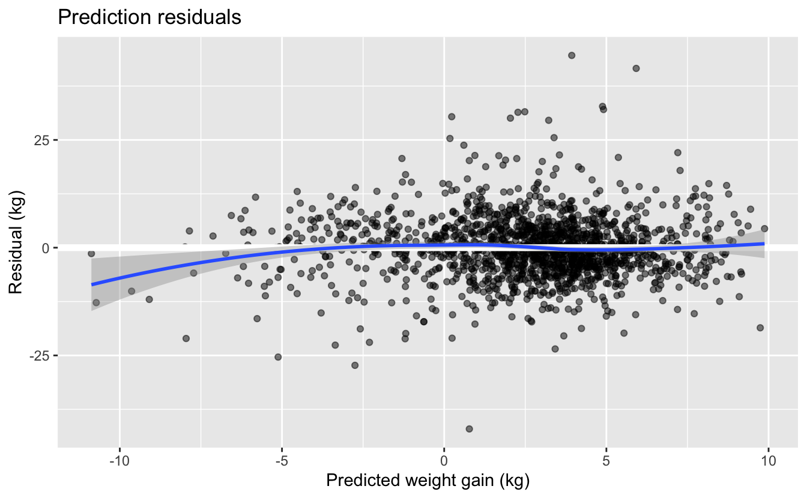
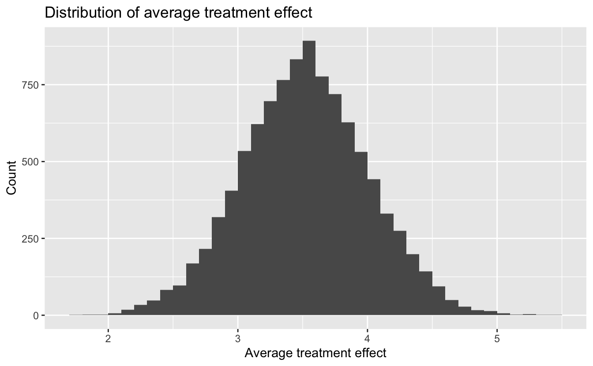

13 Standardization and the parametric g-formula
# Packages
library(tidyverse)
# Parameters
# NHEFS data
file_nhefs <- here::here("data/nhefs.rds")
# Round and format vector
round_format <- function(x, nsmall = 2, ...) {
format(round(x, digits = nsmall), nsmall = nsmall, ...)
}
# Print tibble
kable <- function(x, cols = where(is.double), nsmall = 2, align = "r", ...) {
x %>%
mutate(across({{cols}}, round_format, nsmall = nsmall)) %>%
knitr::kable(align = align, ...) %>%
kableExtra::kable_styling(full_width = FALSE, position = "left")
}
# Print min, mean, and max of vector
kable_summary <- function(x, nsmall = 2, ...) {
tibble(min = min(x), mean = mean(x), max = max(x)) %>%
kable(nsmall = nsmall, ...)
}
#===============================================================================
# NHEFS data
nhefs <- read_rds(file_nhefs)
# NHEFS censored for those with weight measurements in 1982
nhefs_censored <-
nhefs %>%
drop_na(wt82, wt82_71)13.1 Standardization as an alternative to IP weighting
Number of individuals in full dataset
nrow(nhefs)#> [1] 1629Number of individuals with weight measurements in 1982.
nrow(nhefs_censored)#> [1] 156613.2 Estimating the mean outcome via modeling
In this section, we will use the censored dataset of those with weight measurements in 1982.
Count untreated and treated individuals.
v <-
nhefs_censored %>%
count(qsmk)
kable(v, nsmall = 0)| qsmk | n |
|---|---|
| 0 | 1163 |
| 1 | 403 |
There are 1163 untreated individuals and 403 treated individuals.
Fit linear regression model for weight gain.
fit <-
lm(
wt82_71 ~ qsmk * smokeintensity + sex + poly(age, 2) + race + education +
poly(wt71, 2) + I(smokeintensity^2) + poly(smokeyrs, 2) + active +
exercise,
data = nhefs_censored
)
broom::tidy(fit)#> # A tibble: 21 × 5
#> term estimate std.error statistic p.value
#> <chr> <dbl> <dbl> <dbl> <dbl>
#> 1 (Intercept) 1.67 0.903 1.85 0.0651
#> 2 qsmk1 2.56 0.809 3.16 0.00159
#> 3 smokeintensity 0.0491 0.0517 0.950 0.342
#> 4 sex1 -1.43 0.469 -3.05 0.00233
#> 5 poly(age, 2)1 -90.6 15.7 -5.76 0.00000000994
#> 6 poly(age, 2)2 -36.2 10.2 -3.53 0.000421
#> 7 race1 0.560 0.582 0.963 0.336
#> 8 education2 0.790 0.607 1.30 0.193
#> 9 education3 0.556 0.556 1.00 0.317
#> 10 education4 1.49 0.832 1.79 0.0733
#> # … with 11 more rows
#> # ℹ Use `print(n = ...)` to see more rowsPredict weight gain for individuals.
nhefs_censored_pred <-
nhefs_censored %>%
mutate(wt82_71_pred = predict(fit))The individual with the unique identifier 24770.
v <-
nhefs_censored_pred %>%
filter(seqn == 24770)This person’s characteristics.
v %>%
select(
seqn, qsmk, sex, race, age, education, smokeintensity, smokeyrs, exercise,
active, wt71
) %>%
kable(nsmall = 0) %>%
kableExtra::scroll_box(width = "100%")| seqn | qsmk | sex | race | age | education | smokeintensity | smokeyrs | exercise | active | wt71 |
|---|---|---|---|---|---|---|---|---|---|---|
| 24770 | 0 | 0 | 0 | 26 | 4 | 15 | 12 | 1 | 0 | 112 |
This person was a white male who did not quit smoking. In 1971, he was age 26, a college dropout, smoked 15 cigarettes a day, had been smoking for 12 years, had moderate exercise, was very active, and weighed 112 kg.
This person’s observed and predicted weight gain.
v %>%
select(wt82_71, wt82_71_pred) %>%
kable()| wt82_71 | wt82_71_pred |
|---|---|
| 3.18 | 0.34 |
The person was observed to gain 3.18 kg between 1971 and 1982 and was predicted to gain 0.34 kg.
Observed weight gain for individuals.
kable_summary(nhefs_censored$wt82_71, nsmall = 1)| min | mean | max |
|---|---|---|
| -41.3 | 2.6 | 48.5 |
Predicted weight gain for individuals.
kable_summary(nhefs_censored_pred$wt82_71_pred, nsmall = 1)| min | mean | max |
|---|---|---|
| -10.9 | 2.6 | 9.9 |
The mean observed weight gain and the mean predicted weight gain are very close.
mean(nhefs_censored$wt82_71) - mean(nhefs_censored_pred$wt82_71_pred)#> [1] -1.021405e-14Prediction residuals.
nhefs_censored_pred %>%
ggplot(aes(wt82_71_pred, wt82_71 - wt82_71_pred)) +
geom_point(alpha = 0.5) +
geom_hline(yintercept = 0, color = "white", size = 2) +
geom_smooth(method = "loess", formula = y ~ x) +
labs(
title = "Prediction residuals",
x = "Predicted weight gain (kg)",
y = "Residual (kg)"
)
13.3 Standardizing the mean outcome to the confounder distribution
Data from Table 2.2.
df <-
tribble(
~name, ~L, ~A, ~Y,
"Rheia", 0, 0, 0,
"Kronos", 0, 0, 1,
"Demeter", 0, 0, 0,
"Hades", 0, 0, 0,
"Hestia", 0, 1, 0,
"Poseidon", 0, 1, 0,
"Hera", 0, 1, 0,
"Zeus", 0, 1, 1,
"Artemis", 1, 0, 1,
"Apollo", 1, 0, 1,
"Leto", 1, 0, 0,
"Ares", 1, 1, 1,
"Athena", 1, 1, 1,
"Hephaestus", 1, 1, 1,
"Aphrodite", 1, 1, 1,
"Cyclope", 1, 1, 1,
"Persephone", 1, 1, 1,
"Hermes", 1, 1, 0,
"Hebe", 1, 1, 0,
"Dionysus", 1, 1, 0
) %>%
mutate(across(c(L, A, Y), as.factor))Fit logistic regression model for outcome Y.
fit <- glm(Y ~ A * L, family = binomial(), data = df)
broom::tidy(fit)#> # A tibble: 4 × 5
#> term estimate std.error statistic p.value
#> <chr> <dbl> <dbl> <dbl> <dbl>
#> 1 (Intercept) -1.10e+ 0 1.15 -9.51e- 1 0.341
#> 2 A1 -4.59e-16 1.63 -2.81e-16 1
#> 3 L1 1.79e+ 0 1.68 1.06e+ 0 0.287
#> 4 A1:L1 0 2.16 0 1Estimate mean value of Y for each individual when untreated (A = 0) and treated (A = 1).
pred_means <-
tibble(
Y_A_0 =
mean(predict(fit, newdata = df %>% mutate(A = "0"), type = "response")),
Y_A_1 =
mean(predict(fit, newdata = df %>% mutate(A = "1"), type = "response"))
)
kable(pred_means)| Y_A_0 | Y_A_1 |
|---|---|
| 0.50 | 0.50 |
The standardized mean outcomes were 0.50 for both the untreated and treated.
We’ll now use the same procedure with the NHEFS data.
Fit linear regression model for weight gain.
fit <-
lm(
wt82_71 ~ qsmk * smokeintensity + sex + poly(age, 2) + race + education +
poly(wt71, 2) + I(smokeintensity^2) + poly(smokeyrs, 2) + active +
exercise,
data = nhefs_censored
)
broom::tidy(fit)#> # A tibble: 21 × 5
#> term estimate std.error statistic p.value
#> <chr> <dbl> <dbl> <dbl> <dbl>
#> 1 (Intercept) 1.67 0.903 1.85 0.0651
#> 2 qsmk1 2.56 0.809 3.16 0.00159
#> 3 smokeintensity 0.0491 0.0517 0.950 0.342
#> 4 sex1 -1.43 0.469 -3.05 0.00233
#> 5 poly(age, 2)1 -90.6 15.7 -5.76 0.00000000994
#> 6 poly(age, 2)2 -36.2 10.2 -3.53 0.000421
#> 7 race1 0.560 0.582 0.963 0.336
#> 8 education2 0.790 0.607 1.30 0.193
#> 9 education3 0.556 0.556 1.00 0.317
#> 10 education4 1.49 0.832 1.79 0.0733
#> # … with 11 more rows
#> # ℹ Use `print(n = ...)` to see more rowsEstimate mean value of weight gain for each individual (wt82_71) when untreated (qsmk = 0) and treated (qsmk = 1).
pred_means <-
tibble(
wt82_71_qsmk_0 = mean(predict(fit, newdata = nhefs %>% mutate(qsmk = "0"))),
wt82_71_qsmk_1 = mean(predict(fit, newdata = nhefs %>% mutate(qsmk = "1")))
)
kable(pred_means)| wt82_71_qsmk_0 | wt82_71_qsmk_1 |
|---|---|
| 1.66 | 5.18 |
The standardized mean in the untreated is 1.66 kg, and the standardized mean in the treated is 5.18 kg. So the estimate for the ATE is 3.5 kg.
We will now use bootstrapping to obtain a confidence interval for this estimate.
ATE using fit on sample of data.
ate <- function(data, sample_rows) {
fit <-
lm(
wt82_71 ~ qsmk * smokeintensity + sex + poly(age, 2) + race + education +
poly(wt71, 2) + I(smokeintensity^2) + poly(smokeyrs, 2) + active +
exercise,
data = data %>% slice(sample_rows)
)
mean(predict(fit, newdata = nhefs %>% mutate(qsmk = "1"))) -
mean(predict(fit, newdata = nhefs %>% mutate(qsmk = "0")))
}Perform bootstrap resampling.
set.seed(231)
n_boot <- 1e4
boot_out <- boot::boot(data = nhefs_censored, statistic = ate, R = n_boot)Distribution of average treatment effect.
tibble(ate = boot_out$t) %>%
ggplot(aes(ate)) +
geom_histogram(binwidth = 0.1, boundary = 0) +
labs(
title = "Distribution of average treatment effect",
x = "Average treatment effect",
y = "Count"
)
Estimate of ATE with 95% confidence interval calculated using bias-corrected and accelerated (BCa) method.
estimate <- ate(data = nhefs_censored, sample_rows = 1:nrow(nhefs_censored))
v <-
broom::tidy(boot_out, conf.int = TRUE, conf.method = "bca") %>%
transmute(estimate, conf_low = conf.low, conf_high = conf.high)
kable(v, nsmall = 1)| estimate | conf_low | conf_high |
|---|---|---|
| 3.5 | 2.6 | 4.5 |